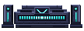

The emitter pool, the rising beam and the pad's lamps now glow BIT's reserved turquoise instead of recovery-cyan — one machine identity, end to end. Switch moods, and flip the emitter to see current vs fixed.

Fixed: the pad emits BIT's turquoise — off the recovery-cyan signal, matched to BIT's screen-face.